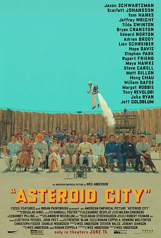

小行星城 / Asteroid City
又名：小行星都市(港) / 小行星之城
画面非常有文艺感、特点鲜明，但是内容看得比较无厘头。文字特别多，比《奥本海默》文字还多，但是剧情又无比跳跃，就是那种一会冒出来一个狗血的那种（怀念一年一度戏剧大会了）。看了大佬们的影评，依然get不太到，总之和《布达佩斯大饭店》一样，会打哈欠。
作品信息
| 导演 | 韦斯·安德森 |
| 编剧 | 韦斯·安德森 / 罗曼·科波拉 |
| 主演 | 詹森·舒瓦兹曼 / 斯嘉丽·约翰逊 / 汤姆·汉克斯 / 杰弗里·怀特 / 蒂尔达·斯文顿 / 布莱恩·克兰斯顿 / 爱德华·诺顿 / 阿德里安·布罗迪 / 列维·施瑞博尔 / 霍普·戴维斯 / 斯蒂夫·朴 / 鲁伯特·弗兰德 / 玛雅·霍克 / 史蒂夫·卡瑞尔 / 马特·狄龙 / 周洪 / 威廉·达福 / 玛格特·罗比 / 托尼·雷沃罗利 / 杰克·莱恩 / 格蕾丝·爱德华兹 / 阿里斯图·米汉 / 索菲娅·莉莉丝 / 伊桑·乔什·李 / 杰夫·高布伦 / 狄安娜·杜纳甘 / 塞乌·乔奇 / 贾维斯·考科尔 / 达米安·勃纳尔 / 温迪·诺丁汉 / 鲍勃·巴拉班 / 费舍·史蒂芬斯 / 保罗·凯曼 / 丽塔·威尔逊 / 斯特凡纳·巴克 / 罗多尔·保利 / 艾米·穆林斯 |
| 类型 | 剧情 / 喜剧 / 爱情 |
| 制片国家/地区 | 美国 |
| 语言 | 英语 |
| 上映日期 | 2023-05-23(戛纳国际电影节) / 2023-06-16(美国) |
| 片长 | 106分钟 |
| IMDb | tt14230388 |
说过什么
2024-05-26 21:56:05
广播 · 看过
画面非常有文艺感、特点鲜明，但是内容看得比较无厘头。文字特别多，比《奥本海默》文字还多，但是剧情又无比跳跃，就是那种一会冒出来一个狗血的那种（怀念一年一度戏剧大会了）。看了大佬们的影评，依然get不太到，总之和《布达佩斯大饭店》一样，会打哈欠。
2024-05-24 16:06:07
广播 · 想看
最后一次看到是 2026-08-01T11:04:24+10:00 · 豆瓣原页